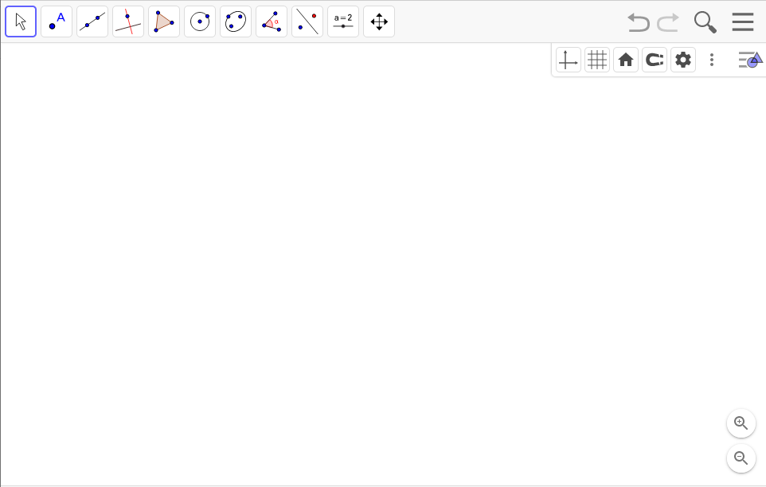

Unidad 2
Geogebra

Indagación matemática Interna
Objetivo
Usar la herramienta de Geogebra geometry, por medio de una secuencia de desafíos para responder preguntas indagatorias.
Teorema de pitágoras
“La suma de las áreas de los cuadrados que se forman sobre los catetos de un triángulo rectángulo, es equivalente al área del cuadrado que se forma con el lado de la hipotenusa.”

Posibles preguntas a indagar
Será que:
- Si cambiamos el triángulo rectángulo por uno cualquiera ¿habrá una relación entre las áreas de los cuadrados?
- Si cambiamos los cuadrados por otros polígonos regulares ¿Seguirá la equivalencia de áreas?
- Si en lugar del plano, estuviéramos en el espacio con un tetraedro ¿Habrá relación entre los tetraedros que se forman?
Exploración
El plan ...
Desafío 1: Cree un proyecto en Geogebra Classic y limpie el lienzo para trabajar en geometría clásica.

Desafío 2: Construya un triángulo rectángulo utilizando los íconos de la parte superior de la aplicación.

Desafío 3: Oculte los elementos que no utilizará.
Considere este paso como una parte de todos los siguientes desafíos.
Desafío 4: Cree un deslizador para la cantidad de lados a usar en los polígonos.
Desafío 5: Cree polígonos regulares cuya base son los lados del triángulo.
Desafío 6: Mida el área de los polígonos regulares.
Desafío 7: Cree 3 textos, uno para expresar cada una de las áreas de los polígonos.
Desafío 8: Cree una fórmula LaTex para evidenciar las sumas de las áreas asociadas al teorema de pitágoras.
Desafío 9: Personalice la apariencia de los elementos de la vista gráfica. Realiza al menos 5 personalizaciones.
Desafío 10: Formulación de conjeturas
- Explore: ¿Se verifica o se refuta nuestra pregunta indagatoria?
- Si se verifica, indique los casos indagados y exprese la propiedad explorada como una conjetura a demostrar.
- Si no se verifica, indique su o sus contraejemplos.
Desafío 11: Validación de la conjetura
Demuestre la conjetura.
Las figuras semejantes tienen áreas proporcionales a los cuadrados de sus lados. Por lo que se cumple $$ \begin{aligned} A_1+A_2 &= ka^2+kb^2 \\ &= k(a^2+b^2) \\ &= kc^2 \\ &= A_3 \end{aligned} $$
Lo que demuestra nuestra conjetura.
Desafío 12: Generalización o reformulación
Plantee la conjetura como un corolario del Teorema de Pitágoras.
Desafío 13: Evaluación del modelo
A partir de lo anterior, planteé 2 nuevas preguntas de indagación.